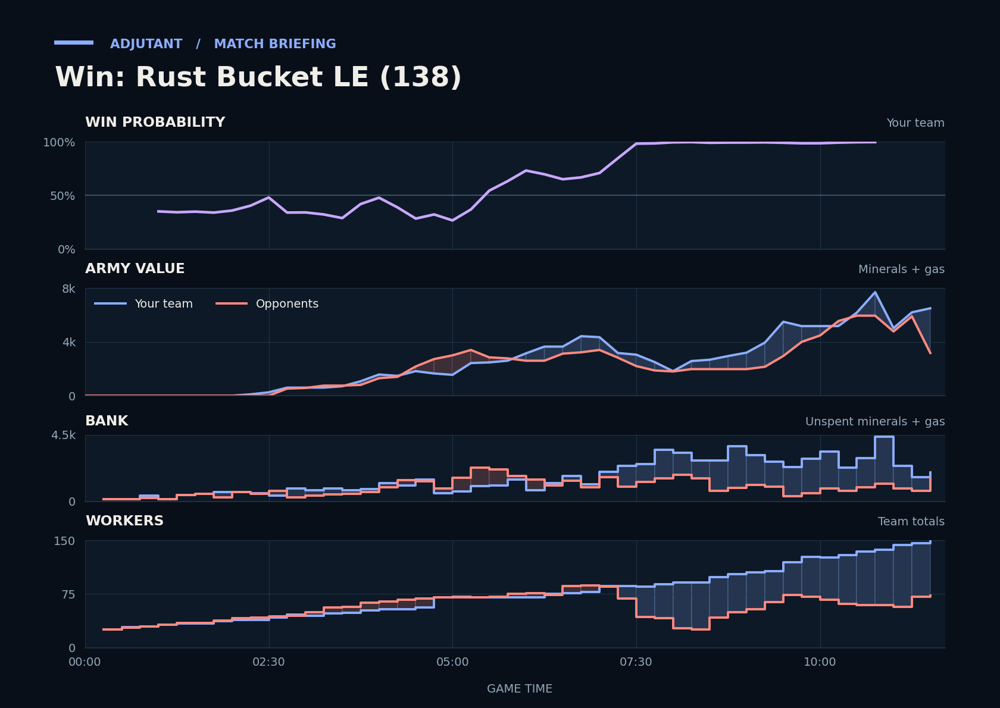

Win: Rust Bucket LE (138)
Provisional debrief. The full report (timeline, insights and analysis) is being generated.

Cached narration uses different analysis inputs (facts, engine notes, prompts or model settings). It has not been regenerated for this report.
**Win.** Scallop's Banshees and TakeTheTip's Roaches killed 68 workers at MaximA's and Luna's bases, and the duo led in workers afterward.
**Why**
- 4:41–5:47: Defending from a smaller army, you killed more than you lost, and MaximA's army was left at 700.
- 6:45–8:12: Mostly Scallop's Banshees, plus TakeTheTip's Roaches, killed 68 workers despite the duo losing more army, leaving the duo ahead on workers.
- 11:21–11:39: TakeTheTip's Hydralisks and Roaches and Scallop's Siege Tanks killed MaximA's whole army, and gg came at 11:36.
Current engine analysis: Win. Review 4:41–5:47: you won a fight (2,250 killed, 1,325 lost). The biggest fight came at 6:45–8:12 (4,125 lost, 7,300 killed).